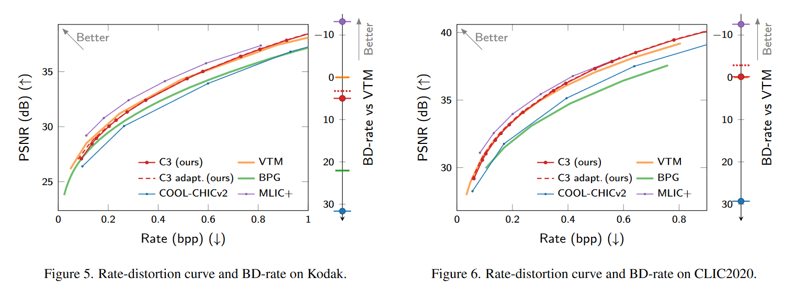
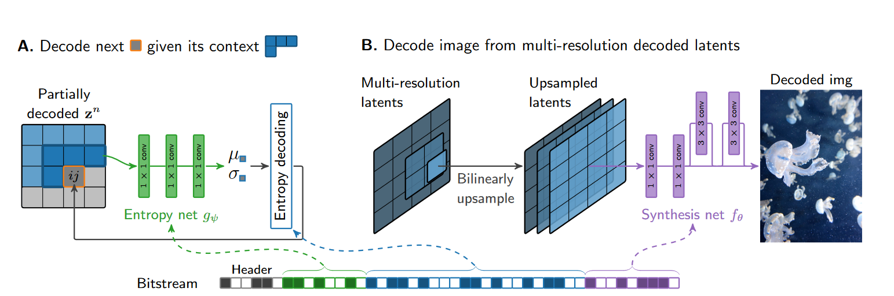
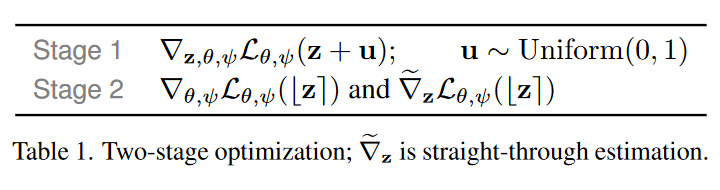

笔记《C3: High-performance and low-complexity neural compression from a single image or video》
希望补充背景知识，所以在新概念/细节上花费精力较多。
摘要
目标：降低深度学习图像压缩的解码复杂度现有模型大多通过使用复杂结构、在大数据集训练来提高泛化性，解码复杂度高。本文中，C3 通过“对每幅图像或视频过拟合一个小模型”，达到较强的 RD 性能和较低解码复杂度。
rate-distortion (RD)
（比特/数据/信息）率失真 RD 如何评估？PSRN、SSIM 等计算原图与生成图像的差异/相似程度
C3 基于 Cool-chic 编码，在单图像上实现后迁移到视频。
Cool-chic
论文链接一种基于坐标的低复杂度分层图像编码器，其中图像被表示为一个可学习的函数，将像素坐标映射到 RGB 值。然后使用熵编码发送函数的参数。
Coordinates Neural Representation (CNR)
C3 在 CLIC2020 image benchmark 中以低于 3k MACs/pixel 的开销，达到与 H.266 参考实现 VTM 相当的 RD；在 UVG video benchmark 中以低于 5k MACs/pixel 的开销达到与 Video Compression Transformer 相当的 RD
MAC
Multiply–Accumulate Operations，1MACs 包含一个乘法操作与一个加法操作，大约包含 2FLOPs。开销的度量。
- [ ] 此处 3k、5k MACs/px 是什么概念？参照传统方法对比
- [ ] 为什么用 MAC 而不是 FLOPS
H.266 | VTM
Video Compression Transformer
VCT 论文链接
Introduction
图像压缩神经网络多基于自编码器（auto-encoder），decoder 为了保证泛化性复杂度会较高，对手机等场景难以适应。COIN 一改思路，用神经网络在要压缩的（单张）图像上过拟合，然后将量化的权重作为图像压缩编码，解码器只针对这一张图片（整个网络只为生成同一张图像），所以复杂度较低。但 COIN 的 RD 表现不好。Cool-chic 在 COIN 的基础上，对待压缩图片另外训练一个熵模型，改善了 RD；Cool-chic v2 的 RD 则超过了 BPG/HEVC 编码。但 Cool-chic 仍不如 VTM，且没有应用到视频压缩（视频对 decoder 开销要求更高）
C3 对 Cool-chic 进行了一系列改进，首次以较低解码复杂度达到与 VTM 相近的 RD，且将 C3 扩展到视频压缩，开销少于 VCT 的%0.1

关于 Cool-chic
首先介绍了 Cool-chic。AE 中模型是独立于待压缩图像的，而 Cool-chic 对每个带压缩图像给出一个模型（权重）。Cool-chic 中，一张图像的 latent 表达是一系列“latent grid”，在不同尺度生成；在重建图像时，先将每个 latent grid 都上采样到原图尺寸，之后 synthesis network 用堆叠的上采样后的 latent grid 预测每个像素点的 RGB，有
压缩后要传输的内容包括：latent grids、熵模型、综合模型。对于每个 latent grid，先进行量化，再用熵模型估计其分布的参数 μ 和 σ，模型考虑网格的邻域。熵模型和综合模型在训练后也量化参数，其参数用预设的分布进行熵编码。 （文中用 location and scale parameters 指代 μ 和 σ，相关）

此外，特别提到了训练中的“quantization-aware”，通过在训练时加入噪声，模拟经过量化后的 latent 向量。
C3 对 Cool-chic 的改进
改进主要包括两类：quantization-aware（训练时）和模型结构。
Optimization 改进
Cool-chic 中为了使模型适应量化的 latent 和参数，在训练中分两阶段引入了“模拟的量化”

C3 沿用了两个阶段的设计，主要对“模拟量化”的方式进行了改进。其余改动较小。
Soft-rounding (stage 1)
在增加噪声前后进行 soft-rounding， 为取整函数的平滑逼近（在压缩时是用取整函数量化的），有：
其中 有温度系数 T，“For large T , sT approaches the identity while for small T , sT approaches the rounding function”。
疑问
文中提到 “the softrounding does not create an information bottleneck as it is an invertible function”，关于 bottleneck？
较小的 T 使 更接近 rounding，但也让 z 的梯度变化更加剧烈。对此作者进行了退火。
Anneal
Kumaraswamy noise (stage 1)
Cool-chic 中对噪声 u 建模为均匀分布， “for sufficiently smooth distributions, the marginal distribution of the quantization error (z − ⌊z⌉) is approximately uniform”，对 u 的建模建立在“量化误差与输入无关”的假设上（如何推出？）。可能有更合适的建模。
Kumaraswamy distribution
数学理论部分不懂
- [ ] 紧性
Cosine decay schedule (stage 1)
作者实验发现用 Adam 优化器 + 余弦学习率效果比较好，只给了结论。
Smaller quantization step (stages 1 & 2)
将量化步长减小，使模型输入减小。
疑问
为什么输入大会导致 instabilities or suboptimal optimization.
Soft-rounding for gradient (stage 2)
在阶段二的 back passing 中，由 Cool-chic v2 的 STE + 缩小系数改为使用 soft-rounding
straight-through estimator(STE)
Adaptive learning rate (stage 2)
"adaptively decrease the learning rate further when the RD-loss does not improve for a fixed number of steps"
模型结构的改进
扩展到视频压缩
将 C3 和 Cool-chic 应用到视频压缩
之后
相关工作
实验结果
总结
读完之后
读完感觉看 Cool-chic 介绍部分的收获反而比较多。有很多概念和基础都不会，之后按疑问和参考文献补充，准备先看